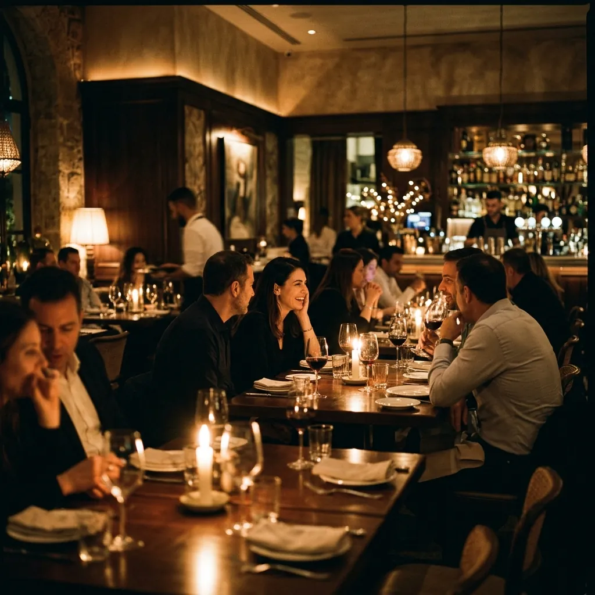
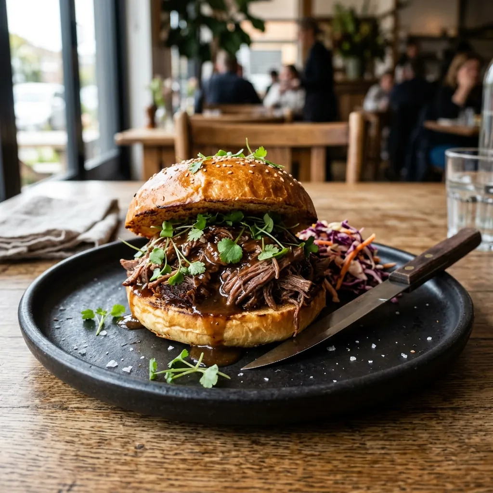
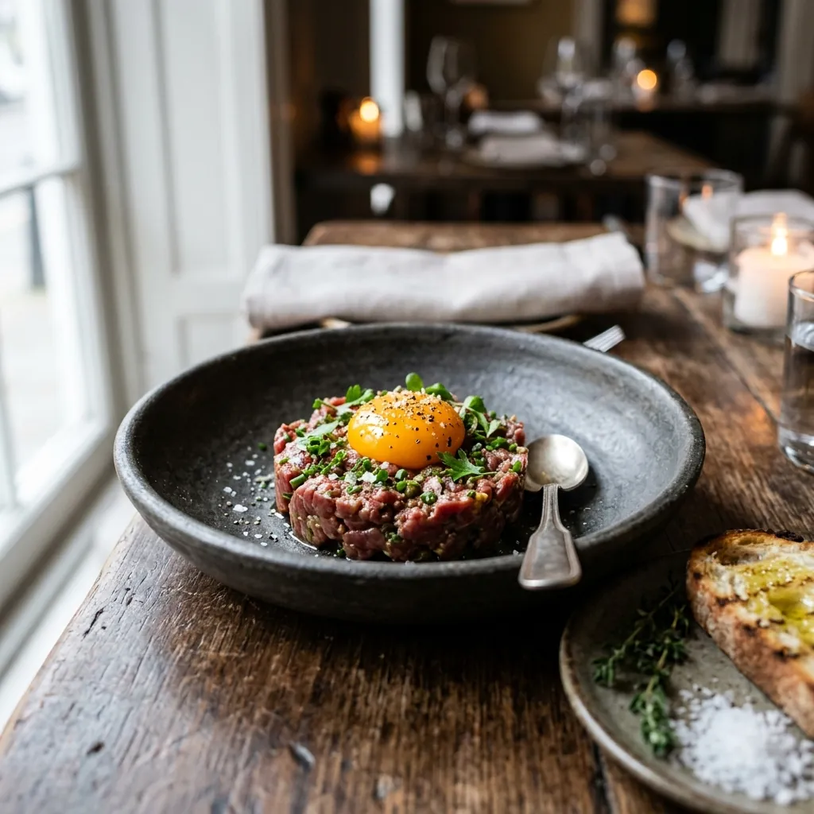
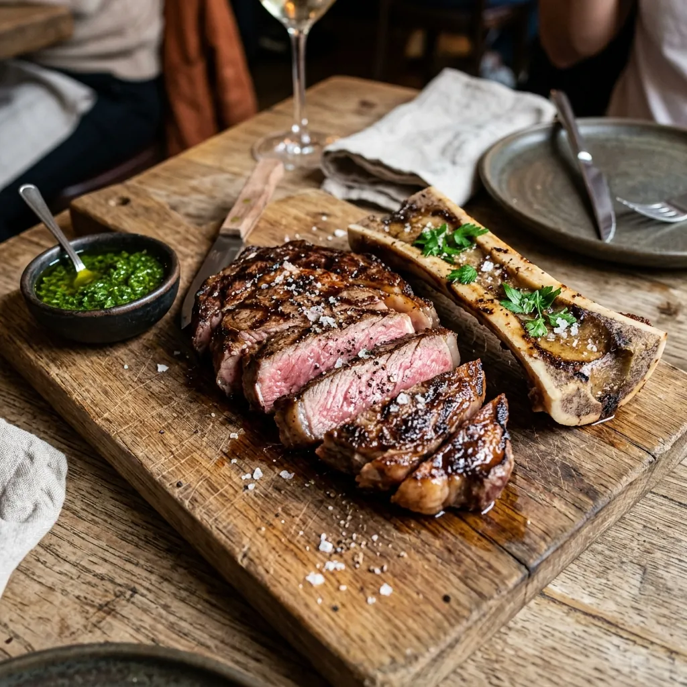
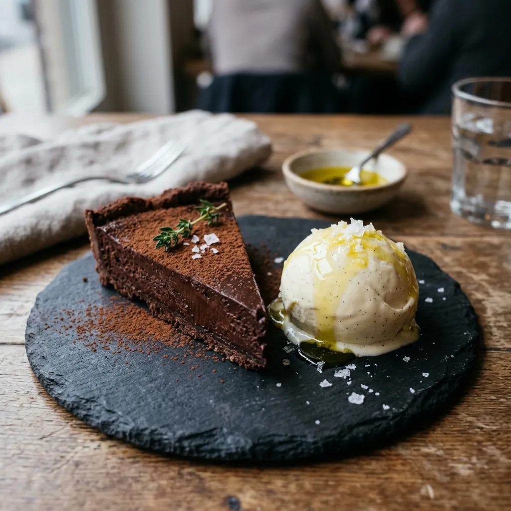
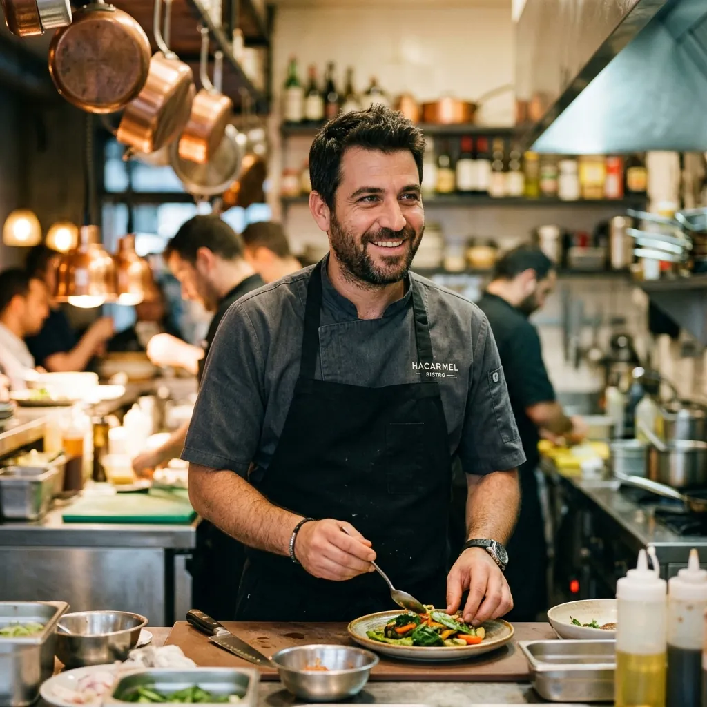

שתים־עשרה כיסאות שמצליחים להרגיש כמו ארוחה בבית של מישהו שמבשל טוב מדי.

הדלת נפתחת ב־18:00
שבזי 27 · נוה צדק · תל אביב
שתים־עשרה כיסאות סביב האש.
שתים־עשרה כיסאות סביב האש.
תפריט אחד, שנכתב כל בוקר.
אין תפריט קבוע. יושבים מול הגריל, ואוכלים את מה שהגיע הבוקר מהשוק.
Delivered this morning
24 ביולי
דניס · נמל יפו, 06:10
·
עגבניות שרי · משק אריק, בית לחם הגלילית
·
תאנים · כפר ביל״ו
·
לאבנה · מחלבת שירת רועים
·
שקדים ירוקים · פרדס חנה
·
קלמארי · אשדוד
·
לימון כבוש · מהמלחה שלנו, מרץ
·
זעתר · הר מירון
·
ענבי מוסקט · כרמי זכרון
·
גחלי זית · מסיק דצמבר
·
דניס · נמל יפו, 06:10
·
עגבניות שרי · משק אריק, בית לחם הגלילית
·
תאנים · כפר ביל״ו
·
לאבנה · מחלבת שירת רועים
·
שקדים ירוקים · פרדס חנה
·
קלמארי · אשדוד
·
לימון כבוש · מהמלחה שלנו, מרץ
·
זעתר · הר מירון
·
ענבי מוסקט · כרמי זכרון
·
גחלי זית · מסיק דצמבר
איך זה עובד
אנחנו לא מחליטים מה תאכלו.
אנחנו לא מחליטים מה תאכלו.
השוק מחליט.
בשש בבוקר עומרי בשוק. באחת־עשרה התפריט מודפס. מה שנגמר — נגמר.
12
כיסאות. אין שולחנות, אין אזור פנימי
2
משמרות בערב — 18:00 ו־20:45
61
יינות, רובם מהגליל ומירוחם

המנה שאנחנו לא מוציאים מהתפריט
כתף טלה, תשע שעות
כתף טלה, תשע שעות
מעל גחלי זית
09:00
הכתף נכנסת לגחלים
14:00
חמש שעות פנימה, מסתובבת פעם בשעה
18:00
יוצאת שלמה, בדיוק כשהדלת נפתחת
נכנסת לגחלים ב־09:00 ויוצאת ב־18:00, בדיוק כשהדלת נפתחת. מוגשת שלמה על העצם עם לאבנה מעושנת, בצל צלוי בקליפתו ולחם מחמצת שנילוש מאותו מחמצת מאז 2018. אנחנו מכינים חמש כתפיים בערב. כשנגמר, נגמר.
₪124
למנה · 5 מנות בערב · כלולה בתפריט הטעימות




החדר
שתים־עשרה כיסאות.
Seat 06 / 12
מרכז הפאס
המקום שבו עומרי עומד רוב הערב. אם באתם לדבר עם השף — זה הכיסא.
מי מבשל
עומרי דהאן
גדל בשכונת שפירא, שבע דקות הליכה מהשוק שהוא קונה בו עד היום. עבד שנתיים בסן סבסטיאן, חזר, ובישל חמש שנים כסו־שף לפני שפתח את נוריה ב־2019 עם שני עובדים וארבע־עשרה כיסאות. בשנה הראשונה הוריד שניים, כדי שיהיה מקום לעבור עם המחבת.
״אני לא מאמין בתפריט שנשאר אותו דבר שבועיים. זה אומר שמישהו קונה מהמקפיא.״
עומרי
שף־שותף · נוריה, מאז 2019
הכתף על הגחלים היא סיבה מספקת לנסוע לתל אביב.
תפריט שמשתנה כל בוקר זה הצהרה. שנה שביעית שהם עומדים בה.
ביקור
שבזי 27,
שבזי 27,
התריס הירוק
אנחנו מחזיקים ארבעה כיסאות לאנשים שנכנסים מהרחוב. השאר בהזמנה מראש — לרוב שבועיים קדימה, ולסופי שבוע יותר.
- שעות
- שלישי–שבת · שתי משמרות: 18:00 ו־20:45
- סגור
- ראשון ושני
- כשרות
- המסעדה אינה כשרה
- נגישות
- כניסה בגובה הרחוב, שירותים נגישים
- חניה
- חניון גילת, אילת 11 — שש דקות הליכה
- ביטול
- עד 24 שעות לפני, בלי חיוב
- אירועים
- סגירת החדר כולו לשתים־עשרה סועדים בקשת הצעה
הזמנת מקום
נחזור אליכם בוואטסאפ